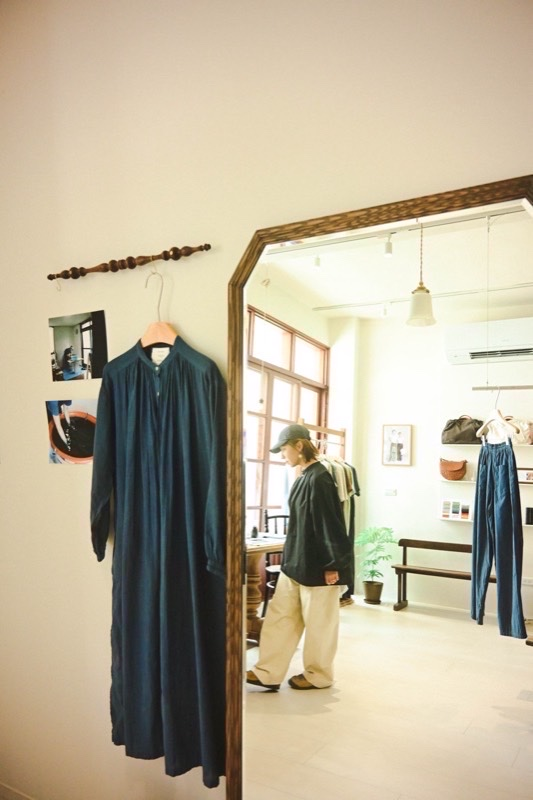
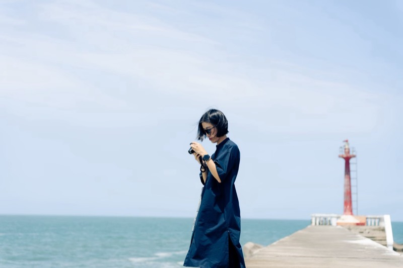
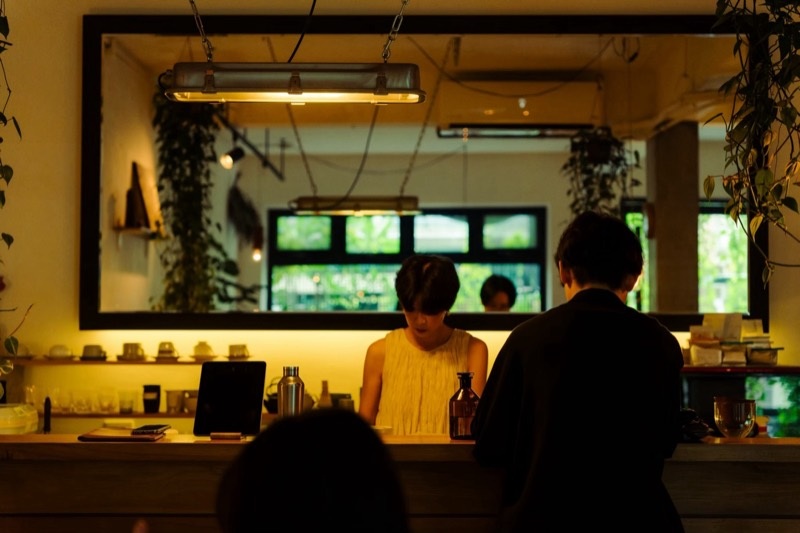
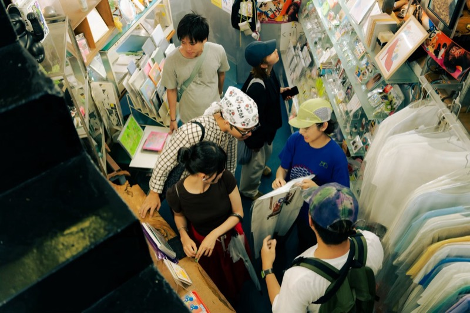

Chapter 02.5
台湾 密着の1日台灣 · 跟拍一天
台湾の3日目と4日目は、台南と高雄で、4人の1日にぴったりついて歩きました。どこでご飯を食べ、どこに立ち寄り、何を見るのか。同世代のふだんの暮らしを、場所の順にたどります。
Day with Emma

Emmaさんの1日台南 8/19
フリーランスフォトグラファー（雑誌・ブランド・劇照スチール撮影）
My Ideal Day理想の1日の過ごし方 理想的一天
心おきなく、何もしないことを楽しむ日
04

Day with Wanning

婉寧さんの1日台南 8/19
フリーランスフォトグラファー（商業写真・イベント撮影）
My Ideal Day理想の1日の過ごし方 理想的一天
大好きな友達と、大好きな場所で、大好きなことをすること
02
台南
漁光島＋安平港漁港南堤燈台
台南の海辺。撮ることが好きな人を連れて行きたい、とっておきの秘密基地「漁光島＋安平港漁港南堤燈塔」台南海邊，想帶喜歡攝影的人一起去的私藏秘密基地「漁光島＋安平港漁港南堤燈塔」
Googleマップで見る
04
台南
驢子布朗尼專門鋪
大学時代から通い続ける、飲み物も音楽も空間も素敵なお気に入りのカフェ「驢子布朗尼專門鋪」從大學時期一直去的，飲品、音樂和空間都很棒的私藏咖啡店「驢子布朗尼專門鋪」
Googleマップで見る
07

Day with Aze

阿澤さんの1日高雄 8/20
フリーランスデザイナー・古物カフェ「灰塵 Hokori」共同運営
My Ideal Day理想の1日の過ごし方 理想的一天
好きな仕事に集中でき、散歩や食事を楽しみ、大切な人としっかり生活できる十分な時間がある一日。
Day with Jayen

李杰恩さんの1日高雄 8/20
芸術家・「正白#FFFFFF」「一坪書室」オーナー・タトゥーアーティスト
My Ideal Day理想の1日の過ごし方 理想的一天
「爽（スワン）！」（最高に気持ちよく、充実して過ごす1日）